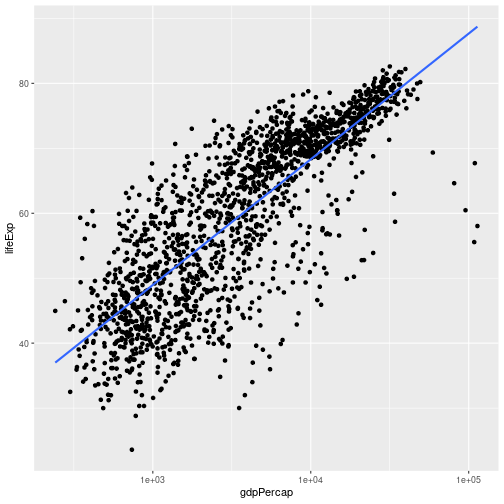
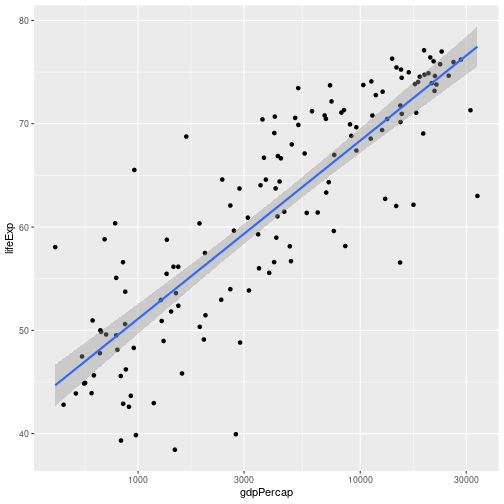

Predictive Modeling: Linear Regression and Categorical Predictors
Setup: housing prices
The example everyone and their dog uses for linear regression — so we might as well. The data set is housing prices from Portland, Oregon, about 15 years ago. (If you’re looking to buy in Portland now, it’s probably more expensive.)
The data: you have the size of the house in square feet and the price in thousands of dollars. The task is: given measurements about a new house (e.g. square footage), predict its price.
Notation
- \(m\) = number of training samples.
- \(x^{(i)}\) = the inputs (sometimes also called the features).
- \(y^{(i)}\) = the outputs (sometimes also called the targets).
The simplest model: draw a straight line through the data. If you have a new house, look up the price on the line. Algebraically:
\[\hat y = a_0 + a_1 x.\]
You don’t know \(a_0\) and \(a_1\) — that is what you figure out from the data. Then for a new size you plug it in. (If you are hoping for a 2800-square-foot house in Portland for under half a million dollars — good luck.)
Two interpretations of the squared cost
Here is the machine-learning way: there is a correct price for house \(i\), that’s \(y^{(i)}\). There is the prediction we make, \(a_0 + a_1 x^{(i)}\). The difference is the error. We want most of the errors to be small. The usual thing — and what we had seen in the MLE topic — is to minimize the sum of squared errors.
It should be clear that the squared form is partly a mathematical convenience. You could say “I want to minimize the sum of absolute errors”:
\[\sum_i |y^{(i)} - (a_0 + a_1 x^{(i)})|.\]
That is legitimate. It is called a different cost function. You’d get a different answer in general.
Which is correct?
View 1: business cost
If I am a realtor and my profit is a percentage of the absolute margin between price and prediction, then arguably the absolute-value cost is what I care about. Not the square. The percentage of the absolute margin — when I sell a lot of houses, sometimes I get it right, sometimes I get it wrong; my profit is the average of “absolute distance between prediction and actual.” That is what I care about.
View 2: statistical / model-based
I have a notion of the way real-estate prices work: there is a linear relationship between square footage and price, except there is some kind of noise. I want to figure out \(a_0\) and \(a_1\) assuming the world really works like this, with Gaussian noise. From the MLE topic, under this Gaussian-noise model, the maximum likelihood estimate is the same as minimizing the squared errors.
So: same answer if you start either from “the world is Gaussian-linear and I want MLE” or from “I care about a square loss for some reason.” Different answer from “I care about absolute distance.” Different answer again if you decide your loss is something to the power of 2.7.
In practice, it is really neither of those — in practice it is just that squared is convenient to optimize numerically.
Simple vs multiple linear regression
This is basically terminology that people don’t care about, but it’s in the course description.
- Simple linear regression — one predictor. \(\hat y = a_0 + a_1 x\). Picture: a line through points in 2D.
- Multiple linear regression — several predictors. \(\hat y = a_0 + a_1 x_1 + a_2 x_2 + \cdots + a_n x_n\). Picture: a plane (or hyperplane) through points in higher-dimensional space.
The way that people visualize multiple linear regression: think of \(x_1\) on one axis, \(x_2\) on another axis, \(y\) on the vertical axis. For a particular pair \((x_1, x_2)\) you have a plane; you predict the point on this plane; the error is the square of the distance between the prediction (on the plane) and the actual point.
In both cases you minimize the sum of squared residuals.
When a straight line is wrong
Here is the most usual way the linear model is not true:
library(gapminder)
library(ggplot2)
library(dplyr)
ggplot(gapminder, aes(x = gdpPercap, y = lifeExp)) +
geom_point() +
geom_smooth(method = "lm", se = FALSE)
It is not a straight line. The regression line that you do get does a bad job of prediction.
In the case of GDP per capita, it so happens that if you transform the x-axis so it is on the log scale:
ggplot(gapminder, aes(x = gdpPercap, y = lifeExp)) +
geom_point() +
geom_smooth(method = "lm", se = FALSE) +
scale_x_log10()
There actually is a linear relationship there. It just happens to be between the logarithm of the GDP and life expectancy.
The lesson: if you are doing prediction, sometimes it is helpful to transform the inputs so that the relationship is actually linear. Of course, if you care about the cost function — for example, if what matters for your application is the low-income countries — that is a separate thing.
If what you care about is figuring out how the world actually works, well — this is just not the answer. It is clear that the world does not work like a straight line in raw GDP, because in the rich countries the line is plainly wrong: the actual data is below the line.
Categorical variables
So far we have looked at quantitative variables — numerical inputs. The counts of something, the weight of something. Quantitative variables are usually genuinely continuous (life expectancy, GDP per capita), but discrete things like counts are often treated as quantitative too. If your x could be 19 or 21, it could also be 20, so it is mostly continuous in spirit. (You cannot have 20.5 students in a class, but if you are modelling average grade vs class size, treating count as quantitative is fine.)
Categorical variables are different. In the gapminder data, the continent column has only a few possible values: Africa, Asia, Europe, Americas, Oceania. Those are not numbers. You cannot average Asia and Australia and get something meaningful.
Borderline cases:
- Colors. Technically colors exist on a spectrum, but light perception doesn’t work that way. Averaging red and yellow gives something close to orange, but averaging red and green just doesn’t make sense.
- Likert scales. “Strongly disagree, disagree, neutral, agree, strongly agree” — usually converted to 1–5. People sometimes say “you can’t really average strongly agree and strongly disagree and get neutral”, so it’s a borderline case.
Indicator variables
If you have a categorical variable with \(K\) possible categories, you can force it into the linear-model framework using indicator variables. Suppose we are predicting \(y_i\) from a category column with values in \(\{1, 2, \ldots, K\}\). Define \(I_{i,k}\) to be \(1\) if row \(i\) belongs to category \(k\), else \(0\):
\[\hat y_i = a_0 + a_{1,1} I_{i,1} + a_{1,2} I_{i,2} + \cdots + a_{1,K-1} I_{i,K-1}.\]
We use \(K - 1\) indicators, not \(K\) — when all \(I\)’s are zero, the row belongs to the “left out” category. Otherwise we would have redundancy.
Concretely, suppose continent 1 is Africa, continent 2 is Asia, continent 3 is Europe, etc., and Africa is the left-out category. If row \(i\) is Asia, then \(I_{i,2} = 1\) and all the other \(I\)’s are zero, so \(\hat y_i = a_0 + a_{1,2}\). If row \(i\) is Africa, all the \(I\)’s are zero and \(\hat y_i = a_0\).
This is just a re-encoding so we can keep using the same linear-regression machinery to figure out the coefficients. The prediction at the end is just the sum of the intercept plus the right indicator’s coefficient.
Continent example with lm
The R function is lm, which stands for “linear model”:
lm(lifeExp ~ continent, data = gapminder)##
## Call:
## lm(formula = lifeExp ~ continent, data = gapminder)
##
## Coefficients:
## (Intercept) continentAmericas continentAsia continentEurope
## 48.87 15.79 11.20 23.04
## continentOceania
## 25.46The output gives you the intercept (Africa, the dropped category) plus one coefficient per other continent. For the Americas, the prediction is intercept + (Americas coefficient), etc.
Why is Africa left out? Just alphabetical — it is kind of arbitrary, and the math works out the same way no matter which one is dropped.
A silly thing: this example averages across all years, which makes no sense. Let’s filter:
lm(lifeExp ~ continent, data = gapminder |> filter(year == 2007))##
## Call:
## lm(formula = lifeExp ~ continent, data = filter(gapminder, year ==
## 2007))
##
## Coefficients:
## (Intercept) continentAmericas continentAsia continentEurope
## 54.81 18.80 15.92 22.84
## continentOceania
## 25.91Now we are predicting life expectancy for each continent in 2007. The intercept is the average across African countries; the other coefficients are the offsets.
As it happens, you can prove that with a categorical-only model and squared loss, the MLE prediction for each category is the average within the category:
gapminder |> filter(year == 2007) |>
group_by(continent) |>
summarize(mean_lifeExp = mean(lifeExp))## # A tibble: 5 × 2
## continent mean_lifeExp
## <fct> <dbl>
## 1 Africa 54.8
## 2 Americas 73.6
## 3 Asia 70.7
## 4 Europe 77.6
## 5 Oceania 80.7The intercept + each coefficient equals this.
Why squared loss → mean; absolute-value loss → median
Interesting aside. If you change the cost function to absolute-value:
\[\sum_i |y_i - \hat y_i|\]
and run the prediction with a categorical variable, you can prove that the per-category prediction is the median rather than the mean. So your choice of cost function does change the answer.
Working with lm and predict in R
Let’s run a regression on a transformed gapminder subset and use predict to get predictions.
gap_1982 <- gapminder |> filter(year == 1982)
ggplot(gap_1982, aes(x = gdpPercap, y = lifeExp)) +
geom_point() +
geom_smooth(method = "lm") +
scale_x_log10()
In aes, anything about the logic of the data goes inside: what’s on the x-axis (here, gdpPercap — and scale_x_log10 puts it on a log scale), what’s on the y-axis (lifeExp). The geom_smooth(method = "lm") displays a linear-regression line through the points; by default it also shows a ribbon for uncertainty around the fit.
We could also have plotted log(lifeExp) on the y-axis. Why doesn’t taking the log of lifeExp make a big difference? Because life expectancy ranges over a narrow band (50–80 years). Taking the log barely changes the shape. If life expectancy ranged from 50 to 5000, the log would matter — but it doesn’t. Usually you take the log of x and don’t take the log of y, but depending on the data it could be anything.
Fitting and predicting
We know that a straight line through this on the log-log scale makes sense, so let’s actually fit the model:
model <- lm(log(lifeExp) ~ log(gdpPercap), data = gap_1982)
model##
## Call:
## lm(formula = log(lifeExp) ~ log(gdpPercap), data = gap_1982)
##
## Coefficients:
## (Intercept) log(gdpPercap)
## 3.0527 0.1266So log(lifeExp) ≈ intercept + (coef) * log(gdpPercap). To get the actual life expectancy prediction for a country with GDP per capita 10,000, we compute the log, multiply by the coefficient, add the intercept, then exponentiate.
You can get the individual predictions with predict:
preds <- predict(model, newdata = gap_1982)
head(preds)## 1 2 3 4 5 6
## 3.924370 4.090434 4.148530 4.055575 4.205327 4.303094For each row in gap_1982, this gives the model’s prediction of log(lifeExp). (The fact that gap_1982 already contains lifeExp is irrelevant — predict ignores the answer column.)
To go back to actual life expectancy, exponentiate:
head(exp(preds))## 1 2 3 4 5 6
## 50.62119 59.76585 63.34079 57.71833 67.04252 73.92819Row 1 was Afghanistan in 1982. The model predicts about 50.6, but the actual lifeExp in 1982 in Afghanistan was lower — there was a war. That kind of explains the under-prediction: the model says “this country has GDP per capita \(X\), so I predict \(Y\) life expectancy”, but during war, GDP per capita can actually be higher (because the economy is busy producing weapons and soldier salaries) while life expectancy goes down. So the model misses the cause.
Prediction for a new observation
You can create a new one-row data frame to score:
new_country <- data.frame(gdpPercap = 10000)
exp(predict(model, newdata = new_country))## 1
## 67.94479The column name has to match the column used in the formula.
Manual sum of squared errors
preds <- predict(model, newdata = gap_1982)
sum((preds - log(gap_1982$lifeExp))^2)## [1] 1.484817This number by itself doesn’t really tell you much — the sum of squared errors is just going to be larger if you have a larger table. Every row contributes some amount, so more rows means a larger total. You really want to compare two models on the same data.
Multiple linear regression: adding year
Add year as a second predictor:
model1 <- lm(log(lifeExp) ~ log(gdpPercap), data = gapminder)
model2 <- lm(log(lifeExp) ~ log(gdpPercap) + year, data = gapminder)
sse <- function(m, df) sum((predict(m, newdata = df) - log(df$lifeExp))^2)
sse(model1, gapminder)## [1] 35.54009sse(model2, gapminder)## [1] 29.51551model2 has the smaller sum of squared errors. The more data you put in, the better the predictions get — so a smaller SSE.
You could read it off the coefficients: the year coefficient looks tiny, but years are 1950–2007 so the term coef * year is actually a meaningful number. For a country with $10000 in 1950 vs in 1990 the difference in predicted log(lifeExp) is non-trivial. On average, a country with the same GDP per capita gained about 2 years of life expectancy between 1950 and 1990 (in the model).